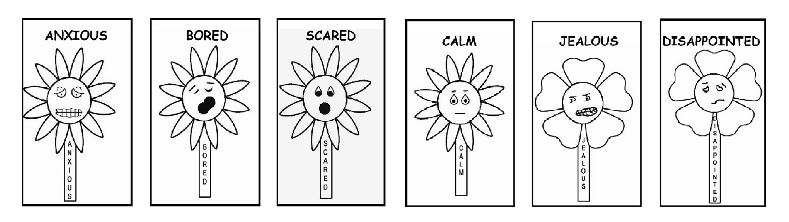

Student E-Workbook
LESSON
Understanding and expressing emotions
Directions:
1. Review the Feelings Garden chart in the workbook. These are
emotions that we all have from time to time, but are discussed
a little less.
2. Go over each feeling individually and ask questions about
feelings.


Suggested Review:
Point to individual feeling faces and ask the following questions:
- What Feeling is this?
- How can you tell they are feeling that way?
- What happens when you feel this way?
- Is it ok to feel this way?
- What are the healthy things you do when you get these feelings?